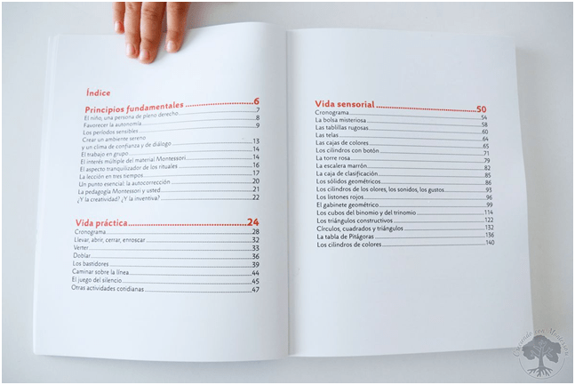

1. Portada
La portada es la carta de presentación del informe, donde se especifica de manera formal
- Título del informe
- Nombre del autor o autores
- Institución o empresa
- Fecha

Un informe académico es un documento formal que sirve para presentar, analizar y comunicar los resultados de una investigación, proyecto o estudio específico. Se redacta de manera estructurada, lógica y con lenguaje claro, permitiendo al lector comprender un proceso y sus conclusiones mediante datos, argumentos y evidencias. Su función principal es organizar el conocimiento obtenido y compartirlo de forma profesional, objetiva y verificable
Se utiliza en
La portada es la carta de presentación del informe, donde se especifica de manera formal
El índice es la guía de navegación del informe. Muestra los títulos y subtítulos con sus respectivas páginas, como los capítulos de un libro de texto que ayudan a ubicar la información sin perder tiempo.
El resumen ejecutivo es una síntesis breve que incluye el propósito del informe, la metodología aplicada, los principales hallazgos y conclusiones. Sirve como explicación rápida para quien quiere entender el contenido sin leer todo el documento.
Una forma facil de hacerlo es Escríbirlo al final, pero ubícalo al inicio. Utiliza lenguaje neutro, sin opiniones, y evita repetir frases del desarrollo. Asegúrate de que cualquier lector pueda entenderlo sin leer el informe completo.
Es el inicio del informe donde se plantea el tema, se justifica su relevancia y se definen los objetivos. ¿Cómo desarrollarla? Aplica la técnica del embudo: comienza con el contexto general y ve enfocándote hasta llegar al objetivo específico. Sé claro y directo; evita redundancias.
Reúne el sustento conceptual y las referencias previas que alimentan la investigación. Define términos clave, presenta estudios similares y enmarca el fenómeno en discusión. Este apartado establece el vínculo entre el trabajo realizado y el conocimiento académico existente.
En este apartado vamoos a escribir el proceso seguido para recolectar y analizar la información. para formular aplicamos el método científico:
Esta es la parte central donde se presentan y analizan los datos, argumentos y hallazgos. ¿Cómo construirlo? Utiliza el método deductivo o inductivo, según tu tema. Organiza la información por secciones temáticas y apóyate en gráficos o tablas bien explicadas. Evita datos sin análisis, podemos usar Gráficas, tablas, ejemplos.

Recapitula los hallazgos más relevantes, responde directamente a los objetivos planteados y ofrece reflexiones finales. No se introducen datos nuevos. Debe ser clara, coherente y demostrar el cierre lógico del proceso investigativo.
Técnica sugerida: Síntesis argumentativaConsiste en condensar los hallazgos más importantes, vinculándolos directamente con los objetivos planteados. No se trata de repetir resultados, sino de dar sentido y cierre lógico al proceso investigativo. Para elaborarla correctamente, redacta párrafos breves que respondan con claridad a las preguntas del estudio, incluye reflexiones sobre lo que se aprendió y evita incluir datos nuevos o supuestos sin respaldo.
Recapitula los hallazgos más relevantes, responde directamente a los objetivos planteados y ofrece reflexiones finales. No se introducen datos nuevos. Debe ser clara, coherente y demostrar el cierre lógico del proceso investigativo.
Técnica sugerida: Derivación lógicaCada propuesta debe surgir como consecuencia directa del análisis realizado. Para desarrollarlas correctamente, identifica una conclusión clave y conéctala con una acción o sugerencia concreta. Usa lenguaje claro, evita generalizaciones y sé propositivo. Ejemplo aplicado: Si notaste que cierto sabor mejora la aceptación entre jóvenes, recomienda enfocar campañas de promoción dirigidas a ese segmento o investigar otros sabores funcionales en futuras fases.
agrega todas las fuentes académicas consultadas, citadas correctamente según el estilo requerido (APA, MLA, etc.). Refleja el rigor del trabajo y asegura la trazabilidad de la información.